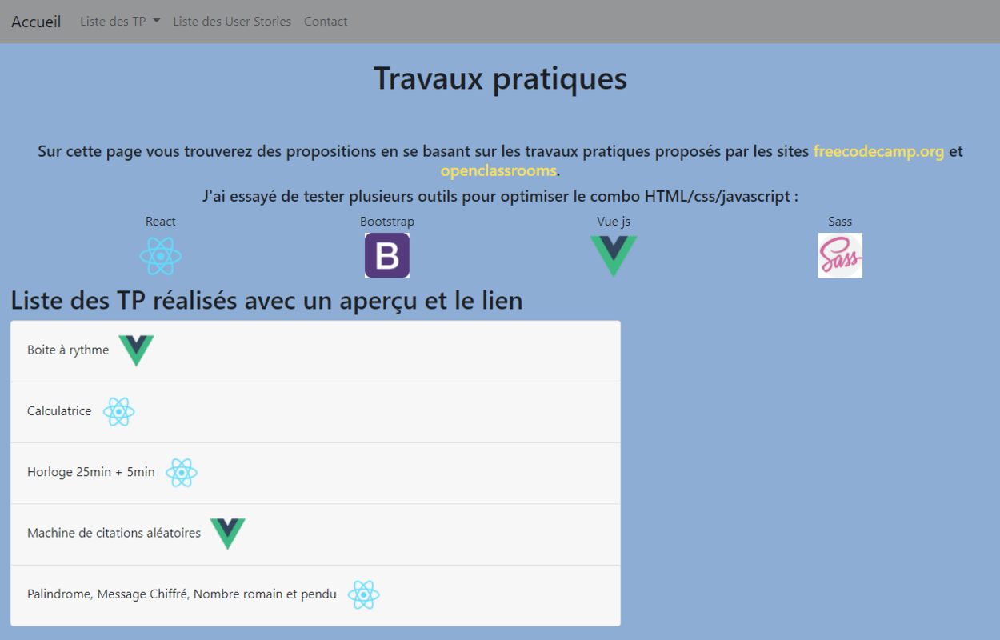
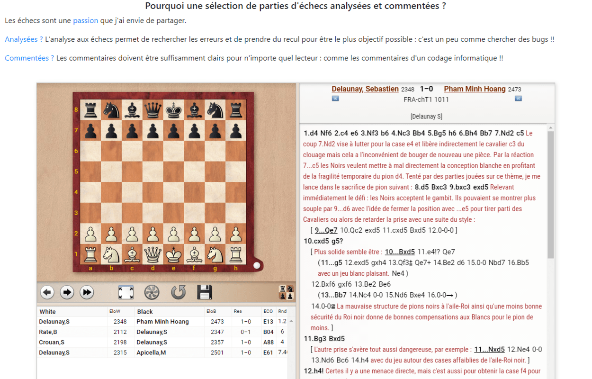

Accueil
Passionné du jeu d'échecs, d'informatique et de running (#no relationship ;) ), je me suis lancé un nouveau défi en décembre 2019 : me former en autodidacte dans le développement web, après 15 ans dans l'enseignement. Après avoir suivi et validé de nombreuses certifications reconnus, notamment avec OpenClassrooms et Freecodecamp (HTML, css avec sass, javascript, bootstrap) j'ai produit plusieurs projets.
Vous trouverez donc dans ce portfolio, un ensemble des projets que j'ai réalisé. J'espère pouvoir les compléter rapidement en améliorant et affinant mes compétences en suivant d'autres formations.
Quelques projets
Travaux Pratiques

Jeux en maternelle

Mes parties d'échecs
